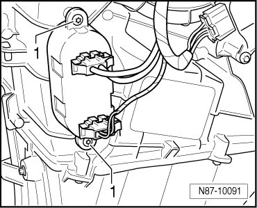

Rear Blower Regulation Sensor
Rear Blower Regulation Sensor
Removing
- Remove side trim at left of luggage compartment.

- Disconnect connectors at Rear Blower Regulation Sensor (G463)
- Remove screws - 1 - and remove Rear Blower Regulation Sensor (G463) from heating and air conditioning unit.
Installing
Install in reverse order.